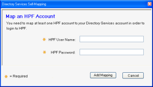

This task tells you how to log on when the Directory Services Authentication feature is enabled.
This feature is effective only with ROI Release 15.0 or later.
If the application is already open, continue with the next step.
Note: The Domain box lists all trusted Windows domains known to the OneContent system. If this is your first login, the Domain box is blank. Otherwise, it displays the last domain that was specified.
Note: The system may display additional dialog boxes during login, depending on current conditions (for example, if you specify an account that is already mapped). Follow on-screen instructions.
The Directory Services Self-Mapping dialog box allows you to associate your Windows account with your OneContent user ID. This dialog box displays when all of the following conditions are true:
This feature is effective only with ROI Release 15.0 and later.
To open the dialog box

Item descriptions
User Name box
Allows you to enter your OneContent user name to map to your Windows account.
Password box
Allows you to enter the current password for your OneContent user name.
Add Mapping button
Validates the user ID you provided, associates it with your Windows account, and displays a confirmation message. At the confirmation dialog box, you can choose to either map another user ID or launch the application. This is the only opportunity the system allows for you to map other user IDs to the Windows account you entered. If you skip this opportunity and launch the application, only a system administrator can map additional IDs to the Windows account.